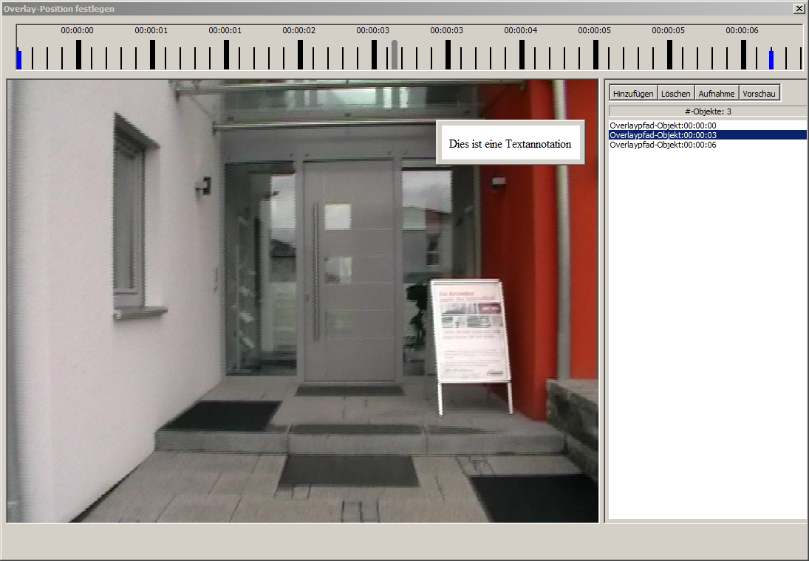

Wird eine Annotation in den Videobereich gelegt, so öffnet sich der Overlayeditor mittels eines Doppelklicks auf den
Anzeigebereich.
In diesem Editor lässt sich die Position der Annotation im Video und die Größe festlegen.
Oben im Editor ist die Zeitleiste der Szene zu sehen. Für jeden Zeitpunkt lässt sich eine Position festlegen.
Dazu muss durch Klicken der Zeitpunkt ausgewählt werden, die Szenen positioniert werden und dann im rechten
Bereich durch "hinzufügen" die Position in den Pfad eingefügt werden.

Zwischen zwei angelegten Zeitpunkten in der Pfadleiste rechts bewegt sich das Overlay von einer Position zur Nächsten.